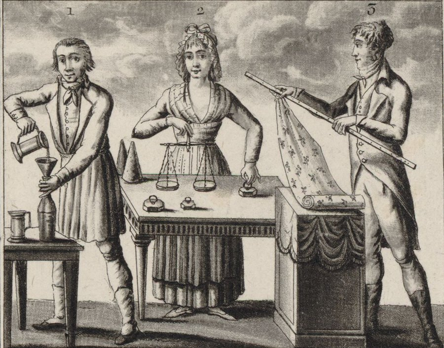
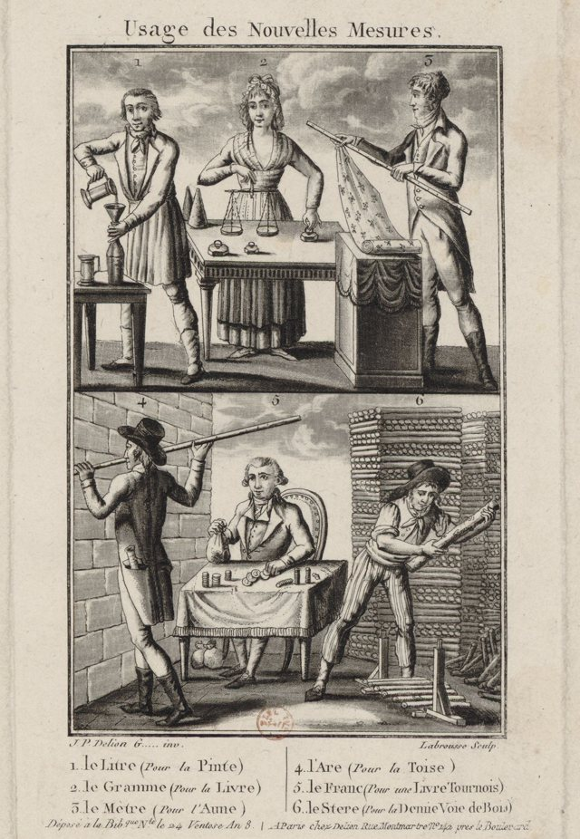
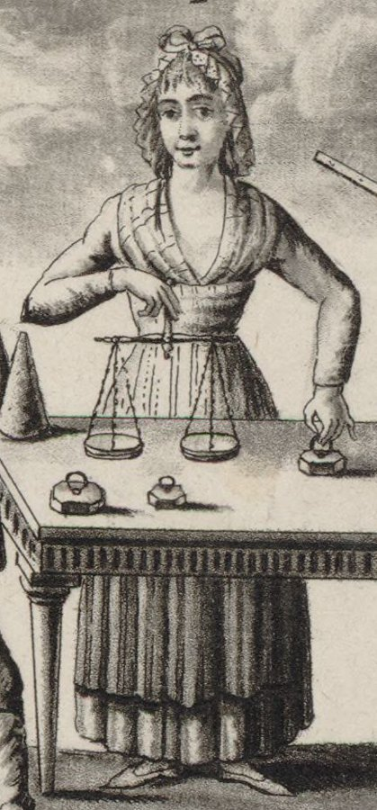

Word Problems
MA.3.AR.1.2 Solve one- and two-step real-world problems involving any of the four operations with whole numbers.
Today: read a word problem, draw a bar model, convert to one unit, solve, and write the answer in compound units. Lengths, liquid volumes, masses and a temperature. Dimensions Math 3B, Chapter 11, Lesson 7 · Word Problems

Paris, France · the year 1800

How do I solve a measurement word problem?
Read it, draw a bar model, convert to one unit, then solve and write it the tidy way.
You will…
- Draw a bar model for a word problem.
- Convert to one unit, then add or subtract.
- Write the answer in compound units, like 2 m 52 cm.
Why a market day?
This real print was sold in Paris in 1800. Its title means "Using the New Measures." Six pictures show people using the new units. In the top row, a man pours a liter, a woman weighs in grams, and a man measures cloth with a meter.


By 1800 the meter, the liter and the gram were the new measures in France. One shopper might buy cloth by the meter, milk by the liter and flour by the gram, all on the same trip. Real problems mix measures like that, and the same steps solve all of them.
Today's math: read the problem, draw a bar model, change to one unit, solve, and write the answer in compound units.
Today you'll take away from 100 and 1,000 and add up to them. Type each answer, then check. You can fix any answer and check again.
Kilograms into grams
Think: The Cloth Seller
🔨 Do · ✏️ WriteA cloth seller at the market has 5 m of cloth. She sells 2 m 48 cm. How much cloth is left?
A roll of 5 whole meters of cloth. Tap a whole meter to hand it over. A broken meter opens below as a 100 cm ruler.
Hand over the meters
Tap 2 whole meters to hand them over.
Break a meter
Press ✂ Break a meter.
Cut 48 cm
Drag the scissors to 48 on the open meter.
How much is left?
Tell how
2 m 52 cm of cloth is left. 2 whole meters went to the shopper, one meter was broken into 100 cm, and 48 cm were cut from it.
Four steps for any measurement word problem
A rope is 6 m 20 cm long. Ben cuts off 2 m 55 cm, then 1 m 70 cm. How much rope is left?
- Read it. Find the question: how much rope is left?
- Draw a bar model. The whole bar is 6 m 20 cm. The two pieces Ben cut are parts. The part that is left is the ?.
- Convert and solve. 6 m 20 cm = 620 cm. 620 − 255 = 365. 365 − 170 = 195 cm.
- Write it tidy. 195 cm = 1 m 95 cm.
Same steps for liters: 2 L 350 mL − 1 L 760 mL = 2,350 mL − 1,760 mL = 590 mL.
Watch out: 3 m 110 cm is not finished. 110 cm is 1 m 10 cm, so write 4 m 10 cm. A tidy answer has less than one big unit after it: under 100 centimeters, or under 1,000 meters, milliliters or grams.
Four ways to stay on track
Your Turn: Ana's Bike Ride
🔨 DoAna rides 1 km 490 m to the park. Then she rides 880 m to the library. How far does she ride in total?
An empty bar model and three labels. The top shows the whole. The two pieces of the bar are the parts.
Draw the bar model
Drag each label onto the bar model: the two rides are the parts, and the ? is the total.
Convert and add
Write it tidy
Kai Mixes the Units
🔨 Do · ✏️ WriteA plank is 3 m 10 cm long. Ms. Lee cuts off 45 cm. Kai says, "45 − 10 = 35, so the plank is 3 m 35 cm now."
An empty bar model and three labels. The plank is the whole bar.
Draw the bar model
Drag each label onto the bar model: the plank is the whole, the cut piece is one part, and the ? is the part that is left.
Convert and subtract
Help Kai
Leo Leaves It Untidy
🔨 Do · ✏️ WriteA baker has a bag of flour that weighs 2 kg 840 g and a bag of sugar that weighs 1 kg 370 g. What is the total weight? Leo writes "3 kg 1,210 g."
An empty bar model and three labels: the two bags and the ?.
Draw the bar model
Drag each label onto the bar model: the two bags are the parts, and the ? is the total.
Convert and add
Write it tidy
Help Leo
A Warmer Afternoon
🔨 DoIn the morning, the thermometer by the school door shows the temperature. By the afternoon it is 76 °F. How many degrees warmer is the afternoon?
A thermometer with Fahrenheit on the left and Celsius on the right. The red line shows the morning temperature.
Read the morning
Drag the gold pointer up to the top of the red line.
The morning temperature
The afternoon
Drag the top of the red line up to 76 °F.
How much warmer?
On Your Own: The Fish Tank
🔨 Do · ✏️ WriteA fish tank holds 5 L. Sam pours in 2 L 600 mL of water, then 1 L 900 mL more. How much water is in the tank? How much more will fill it?
An empty bar model and four labels. The whole bar is what the tank holds.
Draw the bar model
Drag each label onto the bar model: the tank is the whole, the two pours are parts, and the ? is the space that is still empty.
Step 1: water in the tank
Step 2: what will fill it?
Tell how you know
Pour, Weigh, Solve
🔨 DoPour 1,150 mL of water. Put an empty bucket on the scale, then pour the water into it. How heavy is the bucket of water? How many more grams would make it weigh 3 kg?
A beaker that holds 2,000 mL, with marks every 50 mL. Below it, a scale with a dial and a tray with an empty bucket and the water. 1 mL of water weighs 1 g.
Problem 1 · Pour the water
Drag the top of the water up to 1,150 mL.
Problem 1 · Weigh the bucket
Drag the empty bucket onto the scale.
Problem 1 · The empty bucket
Problem 1 · Add the water
Drag the water onto the scale, next to the bucket.
Problem 1 · Bucket and water
Problem 2 · Up to 3 kg
Prove It
✏️ WriteProblem 3 · Prove It
Three Shelves
A board is 5 m long. Max cuts 3 shelves from it. Each shelf is 1 m 10 cm long. How much board is left?
Turn in your work
- Check the list below. Jobs 1 to 8 are required. The Bonus is optional.
- Press 📋 Gather my answers, then 📋 Copy. Or press 🖨️ Print or save as PDF.
- Open this lesson's assignment in Canvas.
- Paste your answers (or upload your PDF and journal photo), then press Submit.
All my answers
Your answers and your work on this page save on this device as you go.
Before you turn in
- I finished Jobs 1 to 8.
- I drew a bar model before I solved.
- I converted to one unit before I added or subtracted.
- I wrote my answers in tidy compound units.
- I tried the Bonus. (optional)
Unit 11 Summative Assessment, then Lesson 3.12.01 · Circles
Next, you'll show what you know about measurement. Then Unit 12 begins with geometry: circles.
Dance of the Blessed Spirits
A calm dance from Christoph Willibald Gluck's opera "Orfeo." For the Paris show in 1774, he gave it a long, gentle flute tune. Listen for the flute over the strings.
"Orfeo ed Euridice," Dance of the Blessed Spirits, Christoph Willibald Gluck. New York Philharmonic, conducted by Arturo Toscanini, recorded in 1929 (HMV D 1784). Public domain, via Wikimedia Commons.